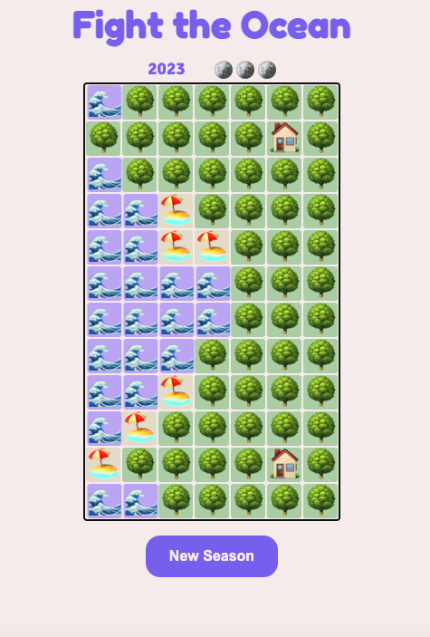

Typescript Emoji Game
This is a game created with Typescript. It's a simple game where your goal is to prevent the ocean from destroying houses. The game has a complex business logic. It manages the passage of the seasons calculating the risk of attack and hurricane years in a random manner. The risk of ocean attack and hurrican year increases slightly every decade.
At the beginning of each season rewards (which can be used to improve infrastructure and gain land from the sea) are calculated based on the amount of beaches in the map.
As each season passes the coastline changes, and the program must update the array of squares that border the ocean. This array is used to select which squares can "attack" the land. Meanwhile land squares are equiped (when the board is created) with square listeners to update infrastructure on click.